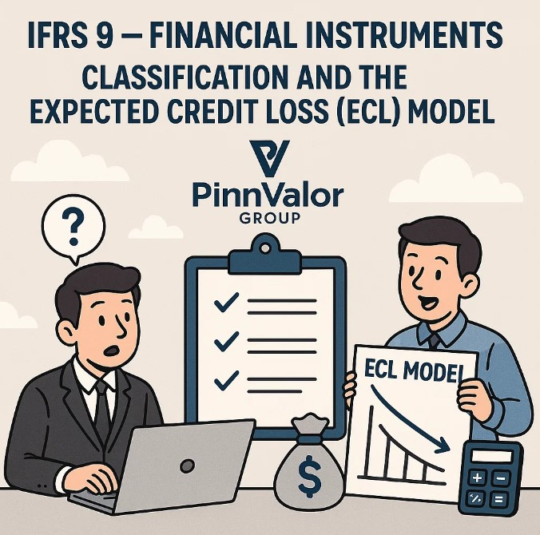

IFRS 9 – Financial Instruments: Classification and the Expected Credit Loss (ECL) Model
In the evolving world of finance and risk management, the way entities recognize, classify, and measure financial instruments has a profound impact on financial reporting and decision-making. IFRS 9 – Financial Instruments, issued by the International Accounting Standards Board (IASB), provides a comprehensive framework that brings greater transparency, consistency, and forward-looking information into financial reporting.
This blog takes a deep dive into two fundamental components of IFRS 9:
- Classification and Measurement of Financial Instruments
- The Expected Credit Loss (ECL) Model for Impairment
How is IFRS 9 revolutionizing the way businesses recognize credit risk and classify financial instruments?
The Expected Credit Loss model replaces reactive loss recognition with proactive risk management, empowering organizations to anticipate and address credit risks before they escalate.
Introduction to IFRS 9
IFRS 9 became effective on January 1, 2018, replacing the earlier IAS 39 – Financial Instruments: Recognition and Measurement. The key objectives of IFRS 9 are to:
- Simplify classification and measurement principles
- Introduce a more timely recognition of credit losses
- Align hedge accounting with risk management practices
Unlike the rule-based and complex IAS 39, IFRS 9 adopts a principle-based approach, making it more adaptable to real-world financial activities.
Part 1: Classification and Measurement of Financial Assets and Liabilities
A. Classification Criteria
IFRS 9 classifies financial assets based on two main factors:
- Business Model Test – How the entity manages its financial assets (i.e., whether to collect contractual cash flows, sell the asset, or both).
- SPPI Test (Solely Payments of Principal and Interest) – Whether contractual cash flows represent only payments of principal and interest on the principal amount outstanding.
B. Categories of Financial Assets
Depending on the outcome of the business model and SPPI tests, financial assets fall into one of three categories:
1. Amortised Cost- Business model: Hold to collect cash flows
- SPPI test: Passed
- Measurement: At amortised cost using the effective interest method
Example: Trade receivables, loans held to maturity
2. Fair Value Through Other Comprehensive Income (FVTOCI)- Business model: Hold to collect and sell
- SPPI test: Passed
- Measurement: Fair value changes in OCI; interest income and impairment in P&L
Example: Debt securities intended to be both held and sold
3. Fair Value Through Profit or Loss (FVTPL)- Default category: For all other financial assets
- SPPI test: Failed or trading model
- Measurement: Fair value with gains/losses in P&L
Example: Derivatives, equity investments not designated at FVTOCI
C. Classification of Financial Liabilities
Most financial liabilities are measured at amortised cost, except:
- Liabilities held for trading
- Those designated at FVTPL
For liabilities at FVTPL, changes in fair value due to own credit risk are recognized in OCI, not profit or loss.
Part 2: The Expected Credit Loss (ECL) Model
A. Why the Shift to ECL?
IAS 39 used an incurred loss model, recognizing credit losses only when a loss event occurred. IFRS 9 introduced a forward-looking Expected Credit Loss model, allowing earlier recognition of potential losses.
B. Scope of the ECL Model
The ECL model applies to:
- Debt instruments at amortised cost or FVTOCI
- Lease receivables
- Trade receivables
- Contract assets under IFRS 15
- Loan commitments and financial guarantees
C. The Three-Stage Model
| Stage | Criteria | ECL Recognition | Interest Revenue |
|---|---|---|---|
| Stage 1 | No significant increase in credit risk | 12-month ECL | Gross basis |
| Stage 2 | Significant increase in credit risk | Lifetime ECL | Gross basis |
| Stage 3 | Credit-impaired asset | Lifetime ECL | Net basis (after ECL) |
Significant Increase in Credit Risk (SICR) can be determined using factors like:
- External credit rating downgrades
- Negative economic indicators
- Payments overdue by more than 30 days
D. Simplified Approach
Entities may apply a simplified approach for trade receivables, contract assets, and lease receivables, where lifetime ECL is always recognized.
Example: A provision matrix for receivables based on aging buckets and default history.
E. Measuring Expected Credit Loss
ECL is calculated as a probability-weighted estimate over the expected life of an asset:
ECL = PD × LGD × EAD (adjusted for time value of money)
Key components:
- PD (Probability of Default)
- LGD (Loss Given Default)
- EAD (Exposure at Default)
Entities must use historical data, current conditions, and forward-looking information to assess ECL.
Implementation Challenges and Best Practices
A. Challenges
- Data limitations
- Complexity of forward-looking models
- Coordination across departments
- Model validation and documentation
B. Best Practices
- Adopt robust risk modeling tools
- Establish cross-functional implementation teams
- Ensure transparent assumptions and disclosures
- Regularly backtest and update models
Conclusion
IFRS 9 has transformed the accounting for financial instruments with a principle-based, forward-looking, and risk-sensitive approach. The classification principles ensure assets are reflected according to how they are managed, and the ECL model ensures losses are recognized earlier and more realistically.
For both corporates and financial institutions, mastering IFRS 9 is not only about compliance but also about enhancing financial discipline and investor confidence.
Stay tuned for our upcoming posts on hedge accounting under IFRS 9 and a comparative analysis of IFRS 9 vs. Ind AS 109.